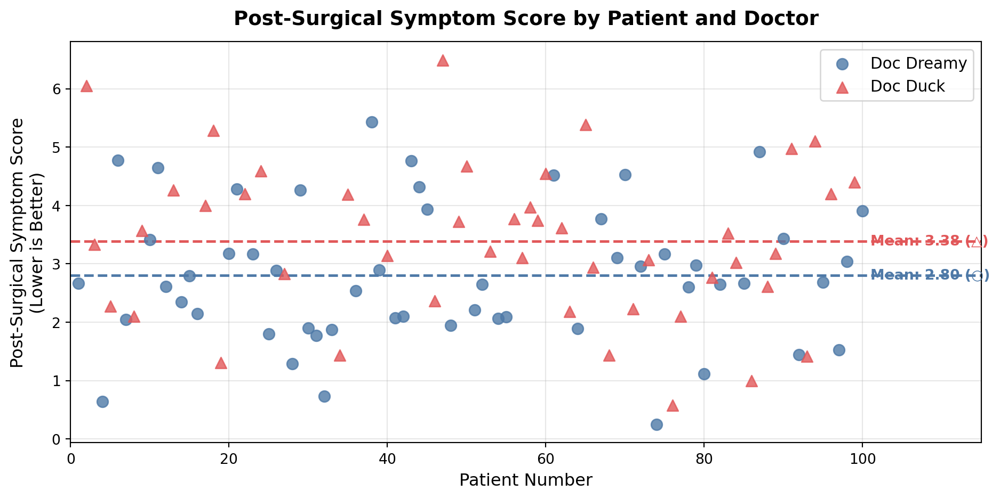
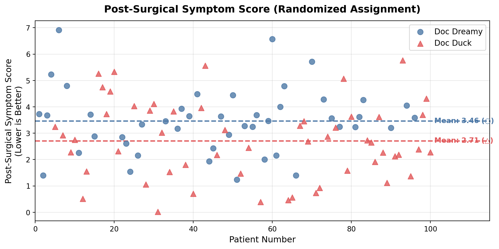
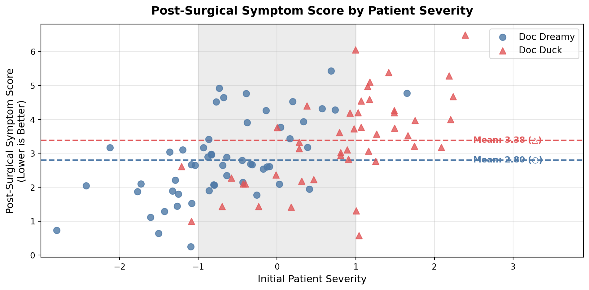

| patient | severity | doctor_id | doctor_name | post_surgical_score | |
|---|---|---|---|---|---|
| 0 | 1 | -1.085631 | 1 | Doc Dreamy | 2.669278 |
| 1 | 2 | 0.997345 | 0 | Doc Duck | 6.054400 |
| 2 | 3 | 0.282978 | 0 | Doc Duck | 3.331899 |
| 3 | 4 | -1.506295 | 1 | Doc Dreamy | 0.640369 |
| 4 | 5 | -0.578600 | 0 | Doc Duck | 2.276224 |
Using Randomization & Stratification to Overcome A Common Cause Confounder
The Paradox of Who Really Is the Better Surgeon
The Paradox: Who Really Is the Better Surgeon?
Imagine you need to choose between two surgeons of similar rank at the same hospital. The first, Doc Dreamy, fits every stereotype of a great doctor — silver-rimmed glasses, Ivy League diplomas on the wall, measured speech. The second, Doc Duck, looks more like a butcher: overweight, large hands, unkempt, no visible credentials.
Counterintuitively, the surgeon who doesn’t look the part may actually be the better choice. As Taleb (2017) argues, succeeding despite not fitting the expected appearance suggests overcoming significant perceptual bias — a form of skin in the game that filters out incompetence.
So who actually is the better surgeon? The data tells a surprising story.
Observational Data: A Misleading Victory for Doc Dreamy
With 100 patients choosing their own surgeon, Doc Dreamy’s average post-surgical symptom score is 2.80 and Doc Duck’s is 3.38. Since lower scores mean better outcomes, Doc Dreamy appears to win — and a two-sample t-test confirms the difference is statistically significant (t = −2.317, p = 0.023).

The raw numbers look clear. But raw numbers can deceive. The question we need to ask is whether this association is causal — or whether something else is driving it.
Solution 1: Randomization — Break the Confounding Path
The gold standard fix is a randomized controlled trial. Instead of letting patients choose their surgeon, we randomly assign them. This severs the link between patient severity and surgeon choice. Now both doctors get a similar mix of easy and hard cases, and any difference in outcomes reflects actual surgical skill.
| patient | severity | doctor_id | doctor_name | post_surgical_score | |
|---|---|---|---|---|---|
| 0 | 1 | -0.668129 | 1 | Doc Dreamy | 3.729393 |
| 1 | 2 | -0.498210 | 1 | Doc Dreamy | 1.396668 |
| 2 | 3 | 0.618576 | 1 | Doc Dreamy | 3.677471 |
| 3 | 4 | 0.568692 | 1 | Doc Dreamy | 5.227316 |
| 4 | 5 | 1.350509 | 0 | Doc Duck | 3.244445 |
Under random assignment, Doc Duck’s average score is 2.71 and Doc Dreamy’s is 3.46. The rankings have flipped completely. A t-test confirms this difference is statistically significant (t = 2.734, p = 0.007). Doc Dreamy is not just not the better surgeon — he is actually the worse one.

Randomization is a powerful tool precisely because it doesn’t require us to know all the confounders in advance. By making surgeon assignment independent of everything else, it neutralizes confounders we haven’t even thought of.
Solution 2: Stratification — When You Can’t Randomize
Most of the time, randomization isn’t possible. In those cases, stratification is the next best option. Instead of comparing all of Doc Dreamy’s patients to all of Doc Duck’s patients, we compare patients of similar severity — apples to apples.
The figure below plots patient severity on the x-axis and post-surgical score on the y-axis. The shaded region highlights severity scores between −1 and 1, where both doctors have substantial overlap in patient mix. This is the zone where a fair comparison is possible.

Within the shaded region, Doc Dreamy’s circles sit higher than Doc Duck’s triangles — meaning Doc Dreamy actually produces worse outcomes for patients of comparable severity. Outside that region, the comparison breaks down because the two doctors are treating very different patient populations. Doc Duck handles most of the high-severity cases on the right side of the chart; Doc Dreamy handles most of the low-severity cases on the left. That separation is the confounder doing its work.
The Takeaway
The raw data made Doc Dreamy look like the superior surgeon. He wasn’t. Patient severity was operating as a puppeteer behind the scenes, routing easier cases to the polished doctor and harder cases to the one who didn’t look the part. Once we either randomize or stratify by severity, the picture reverses entirely.
This is the lesson that extends far beyond surgery. Whenever you see a striking association in observational data, the first question to ask is: what common cause might be driving this? Draw the causal graph. Think about what causes what. Then either randomize to break the confounding path, or stratify to control for it directly.
The numbers weren’t lying. They were just answering a different question than the one you thought you were asking.
References
Taleb, Nassim Nicholas. 2017. “Surgeons Should Not Look Like Surgeons.” https://medium.com/incerto/surgeons-should-notlook-like-surgeons-23b0e2cf6d52.